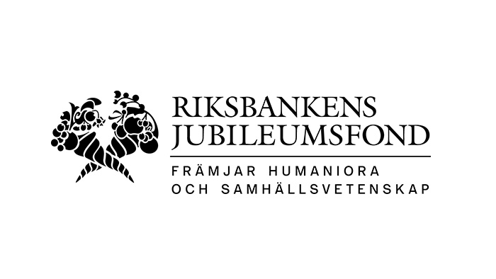

FUNDING
Funding and project administration

Riksbankens Jubileumsfond (RJ)
MindShift is funded by Riksbankens Jubileumsfond (RJ), which supports research in the humanities and social sciences.
- Project reference
- P26-0179
- Project period
- 1 January 2027 – 31 December 2029
- Principal investigator
- Pierluigi Cassotti
- Grant-administering institution
- University of Gothenburg, Sweden